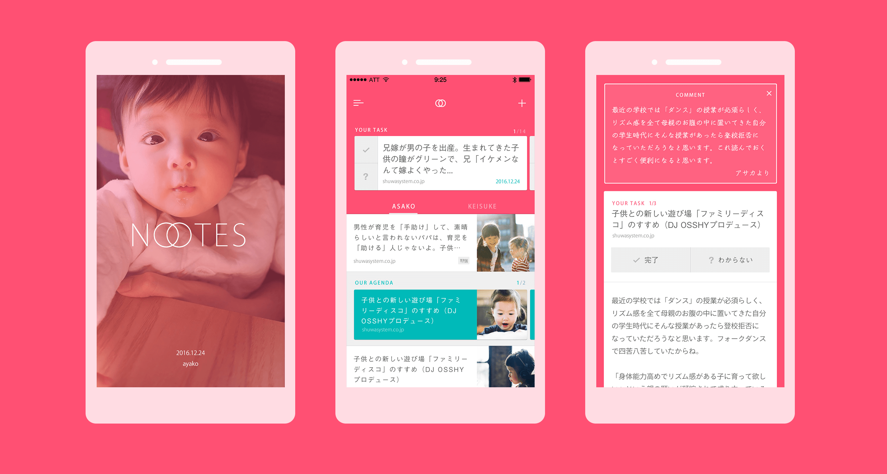

NOTES
2016
IA & APP UI Design
2016
IA & APP UI Design
改善を続ける
育児支援用ブックマークアプリのUIデザインと情報設計。
妊婦手帳アプリや育児手帳アプリの設計を見直し、プライベートでリデザインを行いました。見直すポイントとしては、育児手帳から提供される情報が実生活とズレていること、本来のアプリの目的として賢く育児を行うためには情報提供だけでは解決しないこと。アプリを使用した妻や友人親類から以上の内容を聞きとリデザインしました。
提供される情報がズレていく原因は、子供の発育スピードの違いにあります。アプリは日数から発育状況にあわせた情報を提供しているのですが、必ずしも情報の配信スピード通り発育するわけではなく遅れたり早まったりします。実際の発育とのズレが原因で我が子の発育状況に不安を覚え、ストレスに感じるそうです。他にも育児に対する漠然とした不安は情報提供だけでは解決はしない、必要なのはパートナーが育児への参加が不可欠という意見も多数のぼりました。以上のインタビュー内容を設計にもり込みました。

(左から)スプラッシュ画面 パートナーとブックマークがシェアできるホーム画面 コメントが追加できるブックマーク詳細
調査すると(親類間の限定的なものですが、、、)、さまざまなメディアから適切な情報を集めて実生活で試してみるという行動が多く見られ、能動的な姿勢がリサーチから見えてきました。設計では情報提供というこれまでの受動的な仕組みを抜本的に変更し、能動的な行為に寄り添う方針にきりかえました。つまりアプリでは情報収集を促しサポートするためにブックマークアプリをメイン機能として据えました。

(左から)パートナーに情報の閲覧を促すタスク画面 育児を通して得られた知見を保存しておくノウハウ画面
パートナーへの育児不参加の原因を聞き取り調査すると、情報の格差が原因の１つとして見えてきました。育児に向き合うお母さんは日常的に情報収集を行うが、パートナーは仕事などがあり両方の知見には大きな差が生まれてしまいます。そうするとパートナーはお母さんの意見に頼らざるをえない構造がうまれ、参加の障壁が高くなっていくことが考えられます。そこで先ほどのブックマーク機能をリアルタイムでパートナーにシェアする機能ももりこんでいます。パートナーからは、お母さんがどういう知識を得ているのかがわかり、またお母さんはパートナーに見て欲しい情報をプッシュすることで、ノウハウの溝が埋まっていくと考えられます。現在、誠意製作中。